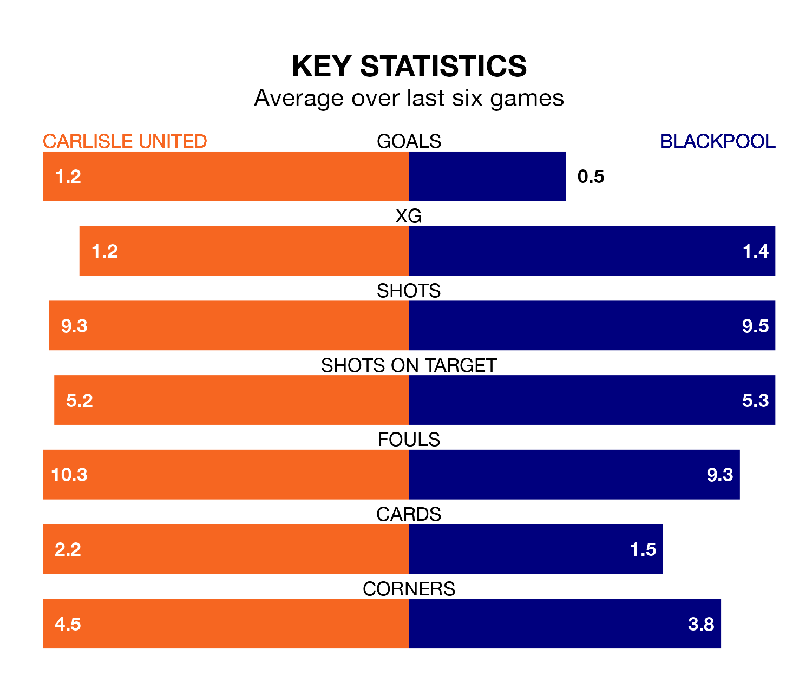

Struggling Carlisle United face Blackpool at Brunton Park on Saturday looking to build on a win in their last league outing.
After securing all three points with a 1-0 victory over Cheltenham Town on Tuesday, Carlisle sit bottom of EFL League One.
They travel to play a Blackpool side eighth in the standings, who also won their last match, 1-0 against Fleetwood Town.
With Daniel Grimshaw between the sticks, Blackpool can rely on one of the league's safest pair of hands. He has kept 17 clean sheets in his 42 appearances this season, and only two other 'keepers – Portsmouth's Will Norris and Lincoln City's Lukas Jensen – have been able to prevent the opposition scoring on more occasions in EFL League One.
In Carlisle's net, Harry Lewis has two clean sheets in 17 games. He has conceded a goal every 48 minutes, twice as often as the 95 minutes between goals for Grimshaw.
With 40 goals in 43 games so far this season, United are scoring at below the league average rate with 0.9 goals per game. And they are conceding more than average, letting in 75 goals at a rate of 1.7 per game.
The Seasiders, meanwhile, are above average scorers, with 1.4 goals per game, compared to a league average of 1.3. They have conceded 1.0 goal per game.
The home team are in mixed form in EFL League One, with two wins and a draw from their last six games.
With three wins and a draw over that period, the visitors' form is better – they have taken 10 points from 18, compared to Carlisle's seven.
Saturday's match will be refereed by Tom Reeves, who has taken charge of 14 EFL League One games so far this season, issuing three red cards and booking 47 players. He has awarded five penalties.
The last Carlisle game Reeves refereed was a 1-0 away loss to Port Vale on August 26. His last Blackpool match was their 4-1 win at home against Reading on September 23.
Updated: 10:01 (UTC), 12/04/24